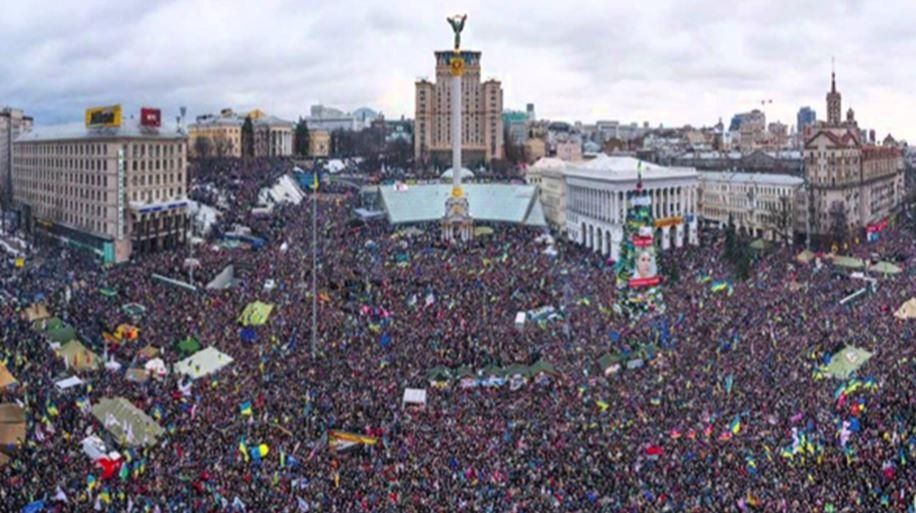
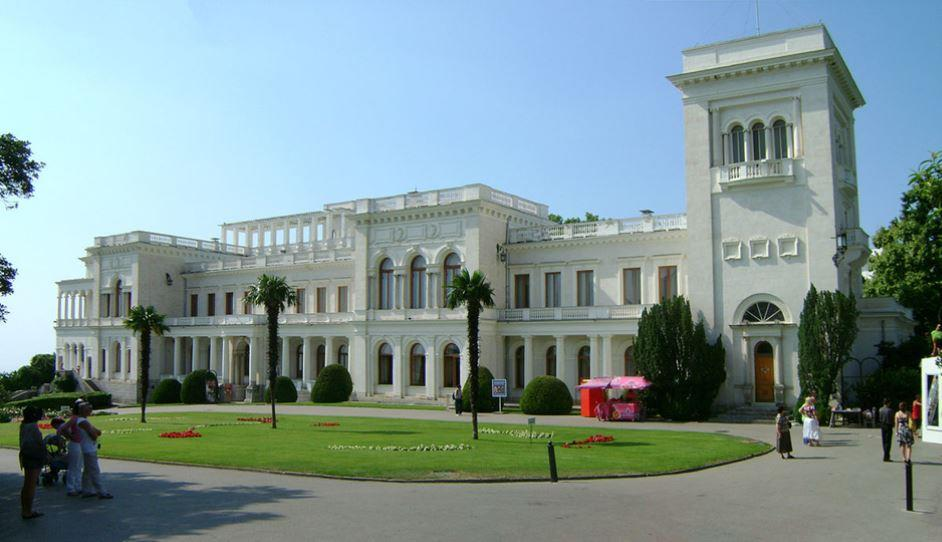
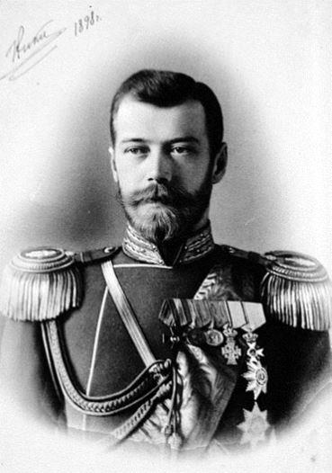
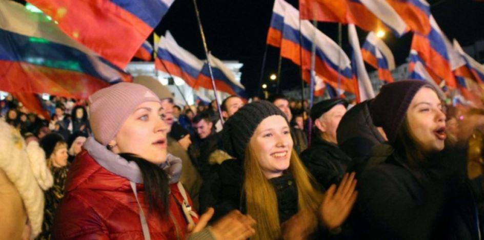
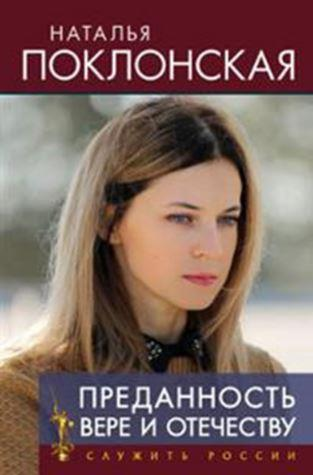
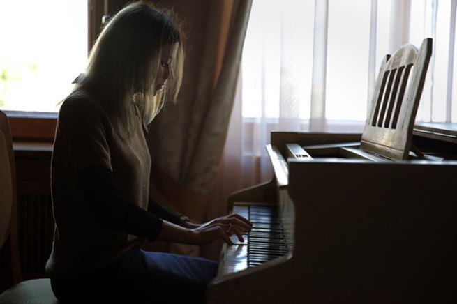

Natalia Vladimirovna Poklonskaïa (Наталья Владимировна Поклонская) est née à Mikhaïlovka, le 18 mars 1980 au sein de l’oblast de Louhansk, à l’époque située en Ukraine soviétique. Du communisme, elle ne va en connaître que la fin. La perestroïka initiée par le soviétique Mikhaïl Gorbatchev va précipiter, dans le fossé de l’histoire, un régime baptisé dans le sang des Romanov. L’Union des républiques soviétiques et socialistes se désagrège doucement ; tout autour d’elle, un à un, les pays entendent reprendre leur liberté vis-à-vis de Moscou.
Le 24 août 1991, l’Ukraine proclame son indépendance, la seconde de son histoire1. Natalia Vladimirovna Poklonskaïa, à peine adolescente, se retrouve plongée dans le tumulte des affrontements entre pro et anti soviétiques. Dans l’oblast, 39 % de la population est de souche russe. Quoique minoritaire, c’est toutefois cette langue qui prédomine. Natalia Poklonskaïa la parle couramment, vit ces événements (qui vont déterminer son avenir) avec toute la passion de son âge. Les biens du parti communiste ukrainien sont confisqués, la république est vite proclamée sous les applaudissements de 50000 personnes réunies à Kiev, à l’endroit même où fut fondé le premier état russe. Tout un symbole !
Avec l’indépendance, la famille de Natalia Vladimirovna Poklonskaïa décide de partir s’installer en Crimée. La région est réputée pour sa douceur de vivre. Vergers, vignobles réputés qui ont fait la joie des meilleures tables de l’aristocratie russe sous l’empire, elle est bordée par la mer noire et ses plages touristiques. Ici on respire même l’histoire en temps réel. Dans la ville balnéaire de Yalta, on y a décidé du destin de l’Europe à l’aube de la libération du joug nazi. Ici on est russe et on se considère comme tel en dépit de la décision du président Nikita Khrouchtchev « d’offrir » à l’Ukraine la Crimée pour les 300e anniversaire de la réunification de la Russie et de l'Ukraine. Ici, le souvenir des Romanov a persisté à travers l’imposant palais de Livadia (Ливадийский дворец), la résidence des Tsars qui subira les affres de la révolution. En Crimée, on honore encore la mémoire du général Piotr Nikolaïevitch Wrangel, ce russe blanc qui dirigea ses régiments contre l’artillerie de l’armée rouge entre 1917 et 1920, date à laquelle les monarchistes perdirent tout espoir de reconquérir le trône. « L’adieu de Slavankia »2, l’hymne officiel des armées de l’Amiral Alexandre Vassilievitch Koltchak, aura un gout amer que l‘on va se transmettre de générations en générations en Crimée.
Et de monarchisme, il en est question chez la jeune Natalia Vladimirovna Poklonskaïa.
L’histoire de la péninsule ukrainienne se mélange à celle de la Russie des Romanov. Annexée par Catherine II en 1792, la Crimée est au centre d’un conflit européen au XIXème siècle. La « Sainte Russie » va lutter vainement contre les Turques alliés aux britanniques de Victoria Ière et aux français de Napoléon III. Ces mêmes français qui enverront un jour de novembre 1920 dans la baie de Sébastopol, le cuirassé Waldeck-Rousseau afin d’évacuer en urgence des milliers de russes blancs que l’on retrouvera bientôt, peupler les usines Renault à Boulogne-Billancourt. À Yevpatoriya, la majorité de la population est russe. Les universités sont occupées par des professeurs russes, l’heure est à la réhabilitation de la famille impériale avec le soutien affiché du gouvernement de Boris Eltsine sous l’influence de Boris Nemtsov, son vice-premier ministre.
Pour la jeune Natalia, ses choix politiques sont rapidement faits. Nationalisme, orthodoxie, monarchisme, les mamelles indispensables à la bonne santé de la « Sainte Russie ».
Dans sa chambre, un portrait du tsar Nicolas II qui ne le quittera plus. Elle sort de la faculté de droit en 2002 et devient rapidement l’assistante de l’avocat-général de Krasnogvardeisky puis en 2006 de celui de Yevpatoria. De son bureau, elle peut voir la lutte que se livrent les «pro et anti-russes » à Kiev. Un conflit qui va bientôt déboucher à l’occupation de la Crimée par les troupes de l'armée fédérale russe en 2014, peu après la destitution du président ukrainien pro-russe Viktor Fedorovitch Ianoukovytch, leader du parti des Régions.
Le rattachement (par référendum) de la Crimée et du port de Sébastopol à la Russie va profondément changer le destin de Natalia Vladimirovna Poklonskaïa dont le travail est reconnu par ses pairs. En 2011, à Simferopol, elle avait subi les représailles violentes d’un gang local « connu pour sa cruauté » alors qu’elle était procureur de la République lors du procès très médiatisé de Rurim Aronov, ancien député du Conseil suprême de Crimée, jugé pour corruption et autres délits.

Résultats Référendum en Crimée le16 mars 2014, le oui l’emporte avec 95.5 %
À Kiev, le mouvement (pro-européen) Eurimaïdan est à la manœuvre. Le pays se divise, se radicalise tout comme l’Europe. La Russie dénonce l’omniprésence de Bruxelles dans ce qu’elle considère comme son pré-carré politico-historique. L’Union panukrainienne « Liberté » (Svoboda), parti politique minoritaire et russophobe, déboulonne la statue de Lénine et s’attaque à tous les monuments russes existants dans le pays. Il va même réussir à infiltrer le gouvernement du Premier ministre Arseni Petrovytch Iatseniouk en lui donnant pas moins de quatre ministres. Pour Natalia Vladimirovna Poklonskaïa, le rejet de cette révolution est total. Interviewée alors par Rossiyskaya Gazeta, elle déclare « avoir honte de vivre dans un pays ou les néo-fascistes peuvent marcher tranquillement dans la rue ». Le ton est donné, il ne le quittera plus.
Elle est nommée au poste de procureur de la république autonome de Crimée, imposée par le premier ministre Sergei Aksyonov et qui sera confirmée par la main même du président russe Vladimir Poutine le 2 mai suivant. Le nouveau gouvernement ukrainien lance alors un mandat d’arrêt contre l’archange de la Crimée. En vain. Même Bruxelles y va de son laïus en lui interdisant de pénétrer à l’intérieur des états –membres. La seule femme figurant sur une liste noire établie conjointement par l’Europe, le Canada, l’Australie, le Japon et les Etats-Unis. A l’Ukraine qui dénonce une annexion illégale, elle répond sèchement au gouvernement de Kiev lors d’une interview accordée à Sputnik (mars 2017) : « Les habitants de la Crimée ont utilisé leur droit à l'autodétermination, qui est fixé dans la charte de l'Onu. Donc il n'est pas correct de parler d'annexion ».
Profondément orthodoxe (elle est l’auteur(e) d’un livre intitulé « Dévotion dans la Foi et la mère patrie » sorti en févier 2017 et d’ors et déjà interdit de diffusion en Ukraine), opposée à la notion de PMA-GPA, elle entend remettre cette religion au centre de l’échiquier russe en Crimée. Et « quiconque tenterait de provoquer des tensions ethniques ou qui ne reconnaîtrait pas le rattachement de la Crimée à la Russie sera immédiatement déporté », prévient-elle en septembre 2014, visant explicitement les tatars musulmans qui manifestaient pour le retour de la province dans le giron ukrainien. Une main de fer dans un gant de velours. Une politique ferme qui va conduire cette jeune femme sur les bancs de la Douma en septembre 2016, élue sous les couleurs de Russie Unie, le parti du président Vladimir Poutine.
Et au parlement, elle multiplie les fonctions (présidente de la commission de vérification de la régularité des informations sur les revenus, les biens et obligations présentées par les députés, vice-présidente du comité pour la sécurité et la lutte contre la corruption, membre de la commission d'examen des dépenses du budget fédéral de la défense de la Russie, de la sécurité nationale et de la police) comme elle noue des contacts avec ses alter-égos européens ( elle a rencontré ainsi en novembre 2016 la député du Vaucluse Marion Maréchal Le Pen).
Visite au palais de Livadia remarquée et médiatisée, cette passionnée de piano va devenir l’égérie du mouvement monarchiste russe. Conduisant une manifestation de 60000 personnes en juillet 2017 (elle parle alors de « crime épouvantable et bestial » commis sur les membres de la famille impériale), elle va être aussi à la tête d’une campagne féroce contre la sortie du film « Matilda ».
Ce dernier qui raconte les amours tumultueux entre celui qui n’est encore que prince Héritier, le futur Nicolas II, la ballerine Matilda Kshesinskaya et le grand-duc Vladimir Alexandrovich a déchainé les passions dans toute la Russie3. Une véritable croisade dans laquelle la députée va jouer sur la fibre nationaliste et orthodoxe des russes. Sanctifiée par l’église russe en 2000, la figure tutélaire de la maison impériale, sauvagement assassinée avec sa famille, il y a 100 ans de cela à Iekaterinbourg, est devenue au fil des décennies l’objet d’un culte mystique auquel participe Natalia Vladimirovna Poklonskaïa. Rapport de 39 pages dénonçant la fausse-vérité distillée par le film, conférences, communiqués la pasionaria monarchiste va attaquer quotidiennement le producteur du film Alekseï Outchitel sur les réseaux sociaux, dont celui de VKontakte (l’équivalent russe de Facebook où elle se met régulièrement en scène, le tout dans une excellent communication très bien maîtrisée)4 et tente de le faire interdire via des actions juridiques. Fort des déclarations du porte-parole de la maison impériale Aleksander Zakatov, qui a qualifié le film de « blasphématoire », elle n’obtiendra cependant pas le soutien de la Grande-Duchesse Maria Vladimirovna qu’elle a contacté. Furieuse, elle lui restituera médailles et titres de noblesse que cette dernière lui avait conférée.
Sa notoriété est telle qu’elle devient l’héroïne d’un manga dessiné par des « fans » qui la sexualise à outrance. Rien de bien illogique, quand on sait que selon le serveur Google, elle est la numéro 7 des personnes les plus recherchées sur Internet et décrite comme un véritable sex-symbol à la fois par plusieurs journaux européens (comme Die Welt qui en fera même une « headline ») ou anglo-saxons (2014). Mais n’en déplaise à ceux qui la croient célibataire, la députée est mariée et a eu un enfant d’une précédente relation.
Enfermée dans un superbe tailleur ou en uniforme militaire (elle a le grade de major-général depuis 2015), Natalia Vladimirovna Poklonskaïa reste profondément attachée au principe monarchique (sur son compte facebook russe, tout le mois de janvier, elle a affiché de nombreuses photos de la maison impériale).
Derrière elle, un tiers des russes qui soutiendrait l’idée de restauration de la monarchie5 dans le pays en dépit des divisions dynastiques qui gangrènent le mouvement. Y compris en Crimée jusqu’aux plus hautes instances du pays. Ainsi, en mars 2017, le premier ministre Sergueï Valerievitch Aksionov a ni plus ni moins demander publiquement le retour du Tsar sur le trône impérial vacant. À diverses reprises, les membres de la maison impériale des Romanov ont été accueillis en véritables chefs d’états et à qui le gouvernement de Crimée à proposer de se ré-installer au palais de Livadia (2015). Une proposition sérieusement étudiée par le prince Dimitri Romanov, peu avant son décès en 2017.
La présidence russe ? Elle n’y songe nullement mais certains la verraient bien succéder au Président Vladimir Poutine. Des rumeurs sur une éventuelle candidature vite balayée par la concernée qui a récemment déclaré : « Je suis pour Vladimir Poutine, et je tiens à dire que je ne fais confiance qu’à notre président qui nous a rendu notre patrie, restaure la Russie et aime son peuple ».
Et même si « la république n’est pas son truc », dit-elle, la restauration de la monarchie peut bien encore attendre un peu. Dont acte !
F. de N.
Notes :
1 : En 1917, L’Ukraine avait oscillé entre monarchie (l’Hetman Pavlo Skoropadsky et Guillaume de Habsbourg) et république avant d’être annexée par l’Union soviétique.
2 : L’Adieu de Slavankia : https://www.youtube.com/watch?v=2kJkfqrPKzM
Partager cette page